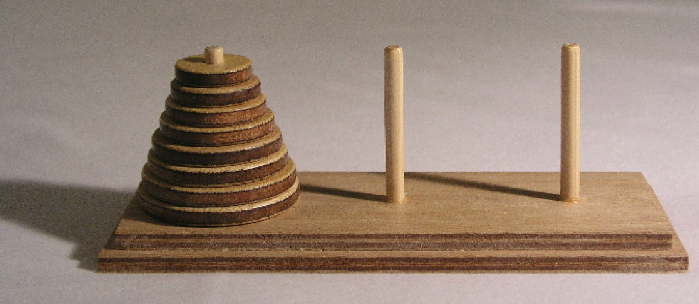

class: center, middle <center><img src="images/ub.png" width="150"></center> # **ALGORÍSMICA** ## Les torres de Hanoi Jordi Vitrià, Mireia Ribera .blue[jordi.vitria@ub.edu] | .blue[ribera@ub.edu] --- ## El problema de les torres de Hanoi <center></center> <small>There is a legend about an Indian temple which contains a large room with three time-worn posts in it surrounded by 64 golden disks. Brahmin priests, acting out the command of an ancient prophecy, have been moving these disks, in accordance with the rules of the puzzle, since that time. The puzzle is therefore also known as the Tower of Brahma puzzle. According to the legend, when the last move of the puzzle is completed, the world will end. If the legend were true, and if the priests were able to move disks at a rate of one per second, using the smallest number of moves, it would take them `2^(64−1)` seconds or roughly 585 billion years; it would take 18,446,744,073,709,551,615 turns to finish.</small> --- ## El problema de les torres de Hanoi Les torres de Hanoi és un joc usat típicament com a exemple de **recursivitat**. A l'inici estan col·locats de més gran a més petit en la primera vareta. El joc consisteix en passar tots els discs a la tercera vareta tenint en compte que només es pot canviar de vareta un disc cada vegada i que mai no podem tenir un disc col·locat sobre un que sigui més petit. --- ## El problema de les torres de Hanoi Analitzem un problema simple que sabem resoldre: passar tres discs des de la primera vareta a la última: <center><img src="images/han.png" width="300"></center> Expressat en paraules, podem explicar-ho com: + Fins el pas 4, he passat el cercle més gran del lloc A al lloc que li toca, C, amb l'ajuda de la vareta del mig, la B. + Fins el pas 6, he passat el cercle més gran que encara no estava col·locat a la vareta C amb l'ajuda de la vareta A. + El pas 7 tanca el problema. --- ## El problema de les torres de Hanoi Per resoldre el problema amb `n` peces podem fer-nos aquesta pregunta: podem expressar la solució de forma recursiva amb el procediment anterior? La resposta és si i la idea bàsica per resoldre-ho amb un algorisme recursiu és: + Per poder passar la peça grossa d'`A` a `C` cal passar les que estan a sobre d'`A` a `B` amb l’ajut de `C`. + Llavors puc passar la peça que queda a `A` a `C` i oblidar-me d’ella, ja està ben col·locada! + Ara tinc la pila a `B`. Per tant el que queda és passar les peces de `B` a `C` amb l’ajuda d'`A` i ja hauré acabat. Aquesta idea bàsica es pot repetir recursivament! --- ## El problema de les torres de Hanoi ```python def moveTower(height,fromPole, toPole, withPole): # height és el nombre de discs if height >= 1: # que hi ha al pal origen moveTower(height-1,fromPole,withPole,toPole) moveDisk(fromPole,toPole) moveTower(height-1,withPole,toPole,fromPole) return def moveDisk(fp,tp): print("moving disk from",fp,"to",tp) moveTower(3,"A","B","C") ``` ```python moving disk from A to B moving disk from A to C moving disk from B to C moving disk from A to B moving disk from C to A moving disk from C to B moving disk from A to B ``` Després veurem que la complexitat és exponencial `O(2^n)`. --- ## El problema de les torres de Hanoi Les crides recursives generen aquest arbre (a cada node hi ha els paràmetres, que recordem eren: `height`, `fromPole`, `toPole`, `withPole`): <center><img src="images/hanoi1.png" width="550"></center> per exemple: `3ABC` vol dir que hi ha tres discs a `A`, que es mouran a `B` amb l'ajut de `C`; `1CAB` vol dir que hi ha 1 disc a `C`, que es mouran a `A` amb l'ajut de `B`. --- ## El problema de les torres de Hanoi L'ordre de generació de la solució és: <center><img src="images/hanoi2.png" width="400"></center> ```python def moveTower(height,fromPole, toPole, withPole): if height >= 1: moveTower(height-1,fromPole,withPole,toPole) moveDisk(fromPole,toPole) moveTower(height-1,withPole,toPole,fromPole) return ``` --- ## El problema de les torres de Hanoi + Què passaria amb l'arbre si enlloc de 3 peces en tenim 4? -- > *Que tindria un nivell més amb el doble de fulles.* -- + Quantes vegades es crida recursivament la funció (quantes fulles i nodes te l'arbre) si tenim `n` peces? -- $$ 1 + 2 + 4 + 8 + \dots + 2^n = \sum_{0}^n 2^i = 2^{n+1} - 1$$ -- + Quina és la complexitat de l'algorisme? -- > *Si fa* `(2^(n+1)-1)` *crides i cada una de les crides com a màxim executa instruccions de cost* `O(1)`*, el cost és* `O(2^(n+1))`*. És a dir, ordre exponencial,* `O(2^n)`.